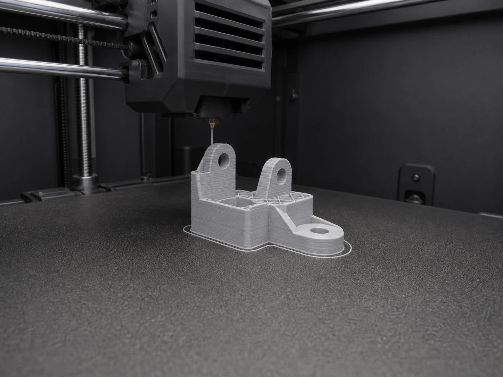

Не сигнал, а понятное решение
Кадры, телеметрия, VLM и политика материала соединены в один andon-процесс.
1ждёт человека
12за смену
Ждут человека · 1КритичныеABS / ASAОпровергнутые
INC-148 · K1C-02waiting_human

ИсточникCV · blob / 0,72
Телеметрия245° · 100°
Кадры3 / 3
Решение системыVLM · 14:18
VLM confidence 0,81
Эскалировать человеку, печать продолжить
Возможный дефект контура, но destructive outcome не подтверждён.
Политика реакции
Детерминированное правило сильнее model verdict.
ABS / ASA: только алерт01 · CV02 · VLM03 · RULE04 · HUMAN
История решения
V
VLM запросил человекаcontinue · escalate_human
VLMC
CV обнаружил контурblob · 0,72
CVR
ABS запретил auto-pauseправило Edge
RULE